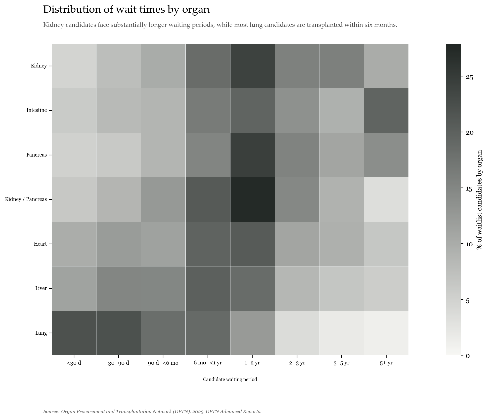

MSDS 455 – Assignment 04 | Relational Data
Distribution of Wait Times by Organ
Kidney candidates face substantially longer waiting periods, while most lung candidates are transplanted within six months.

Source: Organ Procurement and Transplantation Network (OPTN). 2025. OPTN Advanced Reports.